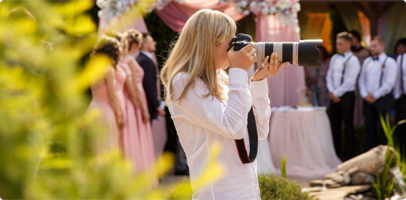
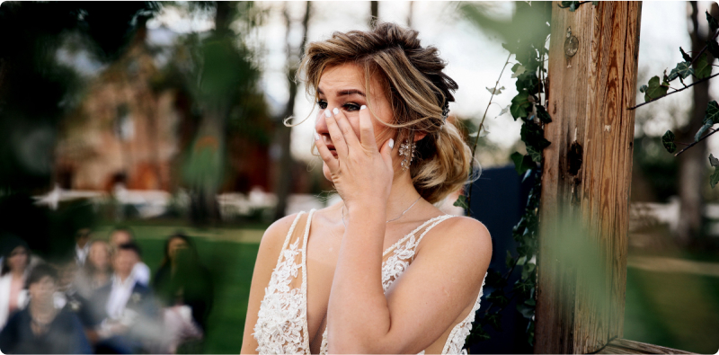

Photography Etiquette:
Tips for Being Discreet Yet Effective
Photography at events requires not only technical skill but also a good understanding of etiquette. Whether you're photographing a wedding, corporate function, or private party, it's essential to be discreet while still capturing impactful shots. In this article, we'll explore some tips for mastering photography etiquette and being a respectful yet effective event photographer.
1. Respect Privacy Boundaries
When photographing at events, always be mindful of people's privacy. Avoid intruding on intimate moments or capturing sensitive situations without permission. Respect guests' personal space and avoid taking photos without their consent.
2. Blend Into the Background
3. Use Quiet Camera Settings
To minimize disruption, use quiet camera settings such as silent mode or low shutter volume. Loud camera noises can be distracting and draw unwanted attention, especially during quiet moments or solemn ceremonies.
4. Be Mindful of Flash Use
In low-light situations, it may be necessary to use flash to illuminate your subjects. However, be mindful of when and where you use flash, as it can be intrusive and disrupt the ambiance of the event. Use flash sparingly and consider alternative lighting techniques whenever possible.
5. Communicate with Event Organizers
Before the event begins, communicate with the event organizers to understand any specific photography guidelines or restrictions. Be respectful of their requests and work collaboratively to ensure a smooth and enjoyable experience for everyone involved.
6. Capture Genuine Emotions
While it's important to be discreet, don't sacrifice the quality of your photos for the sake of blending in. Look for genuine moments of emotion and connection and capture them authentically. These candid shots often make the most memorable and impactful photographs.
7. Edit with Sensitivity
When editing event photos, exercise sensitivity and discretion. Avoid editing out imperfections or altering the reality of the event in a way that misrepresents the experience. Aim to enhance the natural beauty of the moments captured while maintaining authenticity.
8. Deliver Photos Promptly and Professionally
After the event, deliver the edited photos promptly and professionally to your clients or the event organizers. Provide clear instructions for accessing the photos and be responsive to any feedback or requests for additional edits.
In conclusion, mastering photography etiquette is essential for being a successful event photographer. By respecting privacy boundaries, blending into the background, and capturing genuine moments with discretion, you can create stunning photos while ensuring a positive experience for everyone involved.